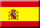
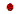

<p align="right">
<a target="_blank" href="https://wilsonmar.github.io/{{ page.file }}/"></a> &nbsp;
<a target="_blank" href="https://translate.google.com/translate?sl=auto&tl=no&u=https%3A%2F%2Fwilsonmar.github.io%2F{{ page.file }}%2F" title="Norsk (Norwegian)"></a> &nbsp;
<a target="_blank" href="https://translate.google.com/translate?sl=auto&tl=es&u=https%3A%2F%2Fwilsonmar.github.io%2F{{ page.file }}%2F" title="Español (Spanish)"></a> &nbsp;
<a target="_blank" href="https://translate.google.com/translate?sl=auto&tl=fr&u=https%3A%2F%2Fwilsonmar.github.io%2F{{ page.file }}%2F" title="Français (French)"></a> &nbsp;
<a target="_blank" href="https://translate.google.com/translate?sl=auto&tl=de&u=https%3A%2F%2Fwilsonmar.github.io%2F{{ page.file }}%2F" title="Deutsch (German)"></a> &nbsp;
<a target="_blank" href="https://translate.google.com/translate?sl=auto&tl=it&u=https%3A%2F%2Fwilsonmar.github.io%2F{{ page.file }}%2F" title="Italiano"></a> &nbsp;
<a target="_blank" href="https://translate.google.com/translate?sl=auto&tl=pt&u=https%3A%2F%2Fwilsonmar.github.io%2F{{ page.file }}%2F" title="Português"></a> &nbsp;
<a target="_blank" href="https://translate.google.com/translate?sl=auto&tl=et&u=https%3A%2F%2Fwilsonmar.github.io%2F{{ page.file }}%2F" title="Estonian"></a> &nbsp;
<a target="_blank" href="https://translate.google.com/translate?sl=auto&tl=ar&u=https%3A%2F%2Fwilsonmar.github.io%2F{{ page.file }}%2F" title="اَلْعَرَبِيَّةُ (Egypt Arabic)"></a> &nbsp;
<!-- <a target="_blank" href="https://translate.google.com/translate?sl=auto&tl=ru&u=https%3A%2F%2Fwilsonmar.github.io%2F{{ page.file }}%2F" title="Cyrillic Russian"></a> &nbsp; -->
<a target="_blank" href="https://translate.google.com/translate?sl=auto&tl=ne&u=https%3A%2F%2Fwilsonmar.github.io%2F{{ page.file }}%2F" title="Napali"></a> &nbsp;
<a target="_blank" href="https://translate.google.com/translate?sl=auto&tl=zh-CN&u=https%3A%2F%2Fwilsonmar.github.io%2F{{ page.file }}%2F" title="中文 (简体) Chinese (Simplified)"></a> &nbsp;
<a target="_blank" href="https://translate.google.com/translate?sl=auto&tl=ja&u=https%3A%2F%2Fwilsonmar.github.io%2F{{ page.file }}%2F" title="日本語 Japanese"></a> &nbsp;
<a target="_blank" href="https://translate.google.com/translate?sl=auto&tl=ko&u=https%3A%2F%2Fwilsonmar.github.io%2F{{ page.file }}%2F" title="한국어 Korean"></a>
</p>
